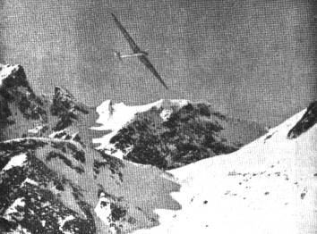

Manual del Vuelo a Vela
Wolf Hirth
1942
Vuelo sin motor en la alta montaña
por
HERMANN RUTHARDT
Los
primeros ensayos de vuelo a vela que se hicieron en los Alpes fueron con apoyo
orográfico, siendo los más conocidos los realizados por Groenhoff, en el año 1931,
desde la Jungfrau.
Así
que puede decirse que casi no había antecedente alguno cuando en el año 1936 decidieron
estudiar los Alpes, en lo referente al vuelo a vela, los grupos de vuelo de los técnicos
y especialistas de Aquisgrán, Darmstadt y Munich, así como el DFS. El objeto que se
perseguía con esta expedición era atravesar los Alpes de Norte a Sur, para conseguir lo
cual había tres posibilidades de vuelo, es decir : 1.º, vuelo con apoyo en la
ascendencia de ondulación ; 2.º, vuelo con apoyo orográfico, y 3.º, vuelo con apoyo
térmico.
El
vuelo con apoyo en la ondulación del aire por la acción de la montaña no se pudo
realizar, pues ni en 1936 ni
en 1937 se
presentó la situación meteorológica favorable para que se produjera el fenómeno
necesario.
La
travesía con apoyo orográfico fracaso porque, con viento, la mayor parte de las veces el
tipo de tiempo que domina en uno de los lados de los Alpes es el debido al efecto de
acumulación (Se
refiere el autor a las circunstancias examinadas en el caso b) del capitulo que
trata de la ascendencia de ondulación, en donde se ve que en la región de barlovento no
se presentan ascendencias de importancia. - N del T.
Así
sólo quedó como utilizable la explotación de las condiciones térmicas y la tentativa
de travesía apoyándose en ellas.

Fig. 149. Groenhoff volando con el
Fafnir en la región de la Jungfrau
En
1936 se escogió Prien, en el lago Chiem, como punto de salida. Muy pronto se pudo
comprobar que la térmica que pudiese utilizarse, en oposición a lo que se había
supuesto en un principio, solamente se presentaba sobre los montes y sus laderas y no en
los valles, y, sobre todo, las laderas orientadas al Sur muy soleadas eran las que
proporcionaban las mejores ascendencias. En las laderas se desprendían pompas térmicas
mucho más fácilmente que en la llanura, únicamente que las circunstancias del
fenómeno eran diferentes a las conocidas en los terrenos ordinarios, pues la pompa
desprendida ascendía lamiendo la ladera hasta que un saliente determinaba su
desprendimiento o, si no ocurría antes esto, hasta llegar a la cúspide, en donde ya
emprendía su franco movimiento vertical.
El
conocimiento de este modo de ser del fenómeno determinó el método del vuelo a vela en
los Alpes. El camino que había de seguirse en un vuelo libre habría de ser sobre los
altos picos y crestas, con lo que también se conseguía, en parte, dando un rodeo, evitar
la travesía de los anchos valles.
En días
de buena térmica se encontraron varias veces hasta ascendencias en las vertientes que
miraban al Norte, porque el aire de las laderas del Sur, animado de un intenso
movimiento ascensional, arrastraba también el aire de las otras vertientes. Otra
circunstancia que asimismo pudo apreciarse en la alta montaña es que las ascendencias son
de reducidas dimensiones transversales y tienen una separación muy marcada con las
descendencias.
También
se vio que las condiciones de las ascendencias en las laderas orientadas al Sur estaban
muy poco influidas por los vientos horizontales, si no eran fuertes.
Las
crestas rocosas y los contrafuertes que de ellas salen, si tienen igual altura, se
diferencian muy poco en cuanto a la intensidad de las ascendencias que producen. Sin
embargo, se tenía más gusto en volar sobre las crestas, porque en ellas se podía
encontrar con más facilidad los lugares en los que se manifiestan las ascendencias. Las
diferencias de configuración de las superficies de las rocas se revelan marcadamente en
los movimientos ascendentes que toma el aire.
Además,
en los días de buena térmica se observa en las montañas que el desprendimiento de
pompas tiene efecto en sucesión muy rápida.
Si la
base de las nubes está alta respecto a las crestas, el vuelo es relativamente fácil,
mientras que con nubes a pequeña altura y una térmica débil el virar ceñido durante
largo tiempo a pequeña altura sobre las rocas produce gran tensión de espíritu, por lo
que en estos vuelos aprendí muy bien a apreciar, en todo su valor, la gran agilidad de
virada y sensibilidad a los mandos del FS 16 « Wippsterz ». Las ascendencias de montaña
están mucho más espaciadas unas de otras que las que se presentan en terreno llano, cosa
que se debe tener en cuenta al elegir la ruta que ha de seguirse en el vuelo.
La
información meteorológica era de gran importancia y estaba a cargo de dos meteorólogos
del DFS, cuya colaboración contribuyó eficazmente a la travesía de los Alpes, por la
exactitud y oportunidad con que suministraron sus informes.
El
método seguido en los vuelos vino a destruir todas las previsiones que en los trabajos de
preparación habían suscitado las posibilidades de aterrizar; cuando las ascendencias
se habían agotado, todavía era posible seguir volando a lo largo de los valles y buscar
un sitio aceptable para aterrizar, aun cuando fuese de dimensiones reducidas.
En 1936
se hicieron vuelos a los Alpes de Kitzbühler, Tuxer y Zillertal, en el alto valle de
Zillertal y hacia Innsbruck. Heini Dittmar consiguió llegar a Toblach volando sobre la
cresta central alpina.
En virtud
de los resultados conseguidos en aquella campaña, los citados grupos de vuelo de
Aquisgrán, Darmstadt, Munich y, además, el de Stuttgart hicieron una nueva excursión en
la primavera de 1937, dirigiéndose otra vez a Prien, en el lago Chiem, y, después de
pasar allí una semana, se trasladaron a Salzburg, donde se celebraban las sesiones de la
Istus.
El 30 de
mayo se hicieron vuelos hacia Italia desde Salzburg. Kracht, que fue el que envoló
último, pudo llegar a la llanura al sur de Ossoppo, apoyándose bajo las desgarradas
nubes de una tormenta. Karch que fue el primero en envolar y que, como los demás pilotos,
hubo de evitar la tormenta, aterrizó en Pieve d'Alpago en las estribaciones de los Alpes
Dolomíticos meridionales. Los otros tres pilotos, que éramos Hanna Reitsch, Ziegler y
yo, aterrizamos en Pieve di Cadore. El 31 de mayo atravesó también los Alpes Osann
aterrizando en la llanura, en Buja (Para
ver lo que supone las campañas y travesías citadas en este capítulo se debe consultar
un atlas geográfico y buscar en él las localidades que se mencionan.
Así,
por ejemplo: el lago Chiem está al norte del Tirol, a 540 m. de altitud, mientras que los
Alpes, al Sur, tienen macizos que están por encima de los 3500 metros. La villa de Osoppo
se encuentra al desembocar en la llanura el río Tagliamento, que deja a su derecha los
Alpes Cárnicos y a su izquierda los Alpes Julianos. Pieve d’Alpago está en el valle
del río Piave, que corre entre los Alpes Dolomíticos del Tirol a su derecha y los
Cárnicos a su izquierda.
El
macizo del Grossglockner, citado también, tiene una altitud de 3797 m.
El
trayecto recorrido por estos pilotos con un velero supone 180 a 200 km. a través de las
montañas más elevadas e intrincadas de Europa y representa uno de los más grandes
esfuerzos del hombre por la conquista del aire con el vuelo sin motor. - N.
del
T.).
Después
de envolar el 30 de mayo en Salzburg no fue nada fácil encontrar ascendencias en la baja
montaña, pero en cuanto pude ganar altura fue relativamente fácil el vuelo sobre la
Latten Gebirge y el Grosse Stadel Horn hacia el Steinernes Meer. Aproximadamente desde
Selbhorn traté de llegar al Grossglockner apoyándome en la Hundstein, cerca de Zell am
See, y luego en el Schwarzwand. Sin embargo, junto al Schwarzwand hube de volverme y volar
otra vez hacia la Hundstein por haberse presentado una pausa en la formación de
ascendencia. El siguiente avance me llevó otra vez al Schwarzwand y al pico Schwarz. La
ascendencia cayó otra vez; pero, no obstante, volando con mucho cuidado pude pasar por el
puerto del Grossglockner con muy pocos metros de altura sobre el suelo. Desde aquí ya fui
constantemente descendiendo por el valle del Möll y en las cercanías de Heiligenblut
encontré nuevamente ascendencias que me elevaron mucho sobre las montañas, con lo que
fui ya suavemente hacia el puerto de Plöcken pasando sobre Ober-Drauburg y entonces
vi que era imposible seguir volando hacia el Sur, pues todo lo que alcanzaba la vista eran
montañas cubiertas de nubes. Afortunadamente disponía de altura que me permitía
llegar a la llanura en vuelo planeado, aunque no sabía si me encontraría con
descendencias en las nubes ni si las nubes se apoyaban en las montañas solamente o
llegaban hasta la llanura, y no consideré prudente atravesar con un velero en vuelo sin
visibilidad lo que quedaba de zona montañosa.
Una
corazonada me hizo tomar la decisión de evitar los Alpes Dolomíticos dando un rodeo a lo
largo de ellos hasta el Monte Peralba para, desde allí, bajar por el valle del Piave. Un
viento contrario y una descendencia, seguramente procedentes de la tormenta, me hicieron
perder rápidamente la gran altura que tenía, así que pronto me encontré al nivel de
las crestas y entonces entré en el valle. Ya era tiempo de buscar un lugar para
aterrizar, que oportunamente hallé en Pieve di Cadore.